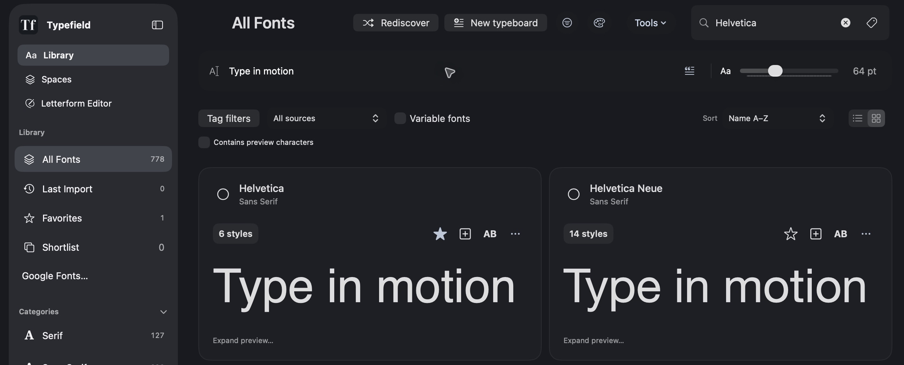

A collection
with character.
Keep your favorites close, group fonts into collections, and compare the details that make a difference.
Find the right face.
Give an idea some space.
Make your own mark.
Typefield brings your fonts, your ideas, and your own letterforms into one native Mac app. Less looking around. More making things.
Bring your font collection into focus. Browse, compare, and shortlist the faces that feel right for your next idea.

A few familiar faces. A whole different feeling.
Keep your favorites close, group fonts into collections, and compare the details that make a difference.
Try a pairing in an actual layout. Explore typeboards in Spaces, then take your direction into the next part of your process.
A native app that fits your workflow, with your font library and creative work close at hand.
Your library and projects live locally. No Typefield account required to use the app.
Take out typeboards, developer tokens, and your own letterforms. Good ideas deserve to go places.
A native Mac app for working with type. Library helps you organize and compare fonts. Spaces gives you a place to explore typography in context. Letterform Editor lets you draw, import, and edit your own letterforms.
Typefield is in development. The first public release is being prepared. Availability, system requirements, and pricing will be shared closer to launch.
Yes. Typefield is built around your own font library. You can preview, organize, compare, and activate fonts. Your font licenses still apply to any work you make or share.
The Letterform Editor supports drawing and artwork import, editable outlines, spacing, and static TrueType export. Start with original artwork and refine it into something you can type with.
Typefield supports file-based handoffs, including typeboard PDFs and developer tokens. The workflow is export and import; available details vary by format and destination.
A home for the collection.
A space for what comes next.